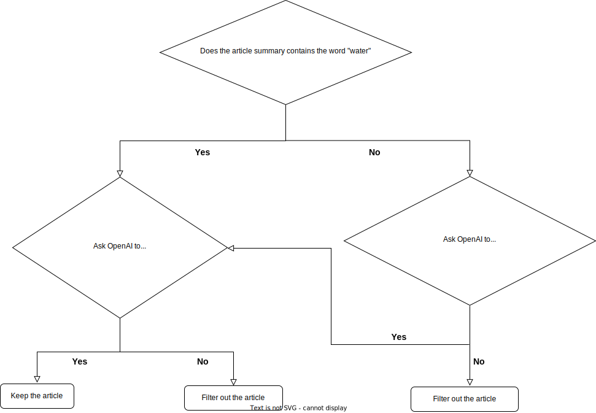

What data source did we use?
The news articles about South Africa water-related issues are extracted from two datasets from the GDELT project. GDELT maintains a database of the world's news media in different languages.
- The articles data are extracted from GDELT DOC 2.0 API. This dataset includes basic information about news articles such as its URL, author, title, and publication date.
- The knowledge graph data are extracted from GDELT Global Knowledge Graph 2.0. The database is updated daily. The knowledge graph data connects every person, organization, location, count, theme, news source, and event across the planet into a single network. We are using the location and theme data from this dataset.
We used the newsfeed library to extract the Knowledge graph data and used the gdelt-doc-api library to extract news articles data with Python.
How did we extract the data from the data source?
DOC 2.0 API data (Articles data)
Extraction
We extracted doc 2.0 API data which satisfies the following two criteria:
- The source of the article is a South African news outlet.
- The article contains at least one of the themes on our selected theme list listed below. We selected the following 15 themes related to water supply, sanitation and water security because there is a limit of one API request every 5 seconds.
‘WB_2007_WATER_SAFETY_PLANS',
'TAX_DISEASE_WATERBORNE_ILLNESS',
'WB_991_DRAINAGE_WATER_QUALITY',
'WB_1995_ENERGY_FOR_WATER_AND_WASTEWATER_TREATMENT',
'WB_2978_WATER_POLLUTION_LOAD',
'WB_1462_WATER_SANITATION_AND_HYGIENE',
'WATER_SECURITY',
'WB_1199_WATER_SUPPLY_AND_SANITATION',
'WB_139_SANITATION_AND_WASTEWATER',
'WB_138_WATER_SUPPLY',
'WB_2008_WATER_TREATMENT',
'WB_1798_WATER_POLLUTION',
'WB_1063_WATER_ALLOCATION_AND_WATER_SUPPLY',
'WB_149_WASTEWATER_TREATMENT_AND_DISPOSAL',
'WB_2981_DRINKING_WATER_QUALITY_STANDARDS'
Result
The news articles data extracted from GDELT doc2.0 API for the period fromJan 1, 2017 to Apr 14, 2022 includes the following information
- URL
- Title
- Publish date
- Image url
- Domain of the news organization
Knowledge Graph data
Extraction
We extracted knowledge graph data which satisfy the following two criteria:
- The source of the news article is from a South African media outlet. GDELT maintains a dataset of media in each country.
- Instead of focusing on dozens of water-related themes like in the article database, we extracted 191 themes of interest to us related to water, natural disaster, climate change, and other relevant topics. We chose a broad range of themes for archiving purposes. The extraction process is relatively fast and yields data, so we could easily filter the information we extracted.
Result
The data extracted from GDELT knowledge graph dataset includes the following information:
- Date
- Themes of the article
- Locations mentioned in the article
- Person names mentioned in the article
- Organizations mentioned the in the article
- Domain of the news organization
- URL of the article
We didn’t use the person names and organization names in the current data repository. Because of the fact that organization names are usually made of multiple words, it would require us to use a different methodology to implement the search functionality on these names, which we haven’t worked out currently. WHY NOT?
Merged Articles and Knowledge Graph Data
Merging the doc2.0 data with the knowledge graph data using the article URL yielded about 26,000 articles from the two datasets with all of the information mentioned above. Articles are deduplicated based on title.
Data Processing and Filtering
Filter by content
We found many articles coded with water-related themes in the GDELT database that were not focused on water sanitation, water supply or water security. The article might contain relevant terms, but was not about water issues. We needed to filter out these irrelevant articles. It’s hard to do that manually because of the volume of articles. As a result, we obtained further information for these articles and then filtered them with OpenAI.
Extracting article summaries and keywords
We used the Full-text downloader (built with newspaper3k and Wayback Machine) from the newsfeed library to extract more detailed information for each article.
These information includes the following elements:
- Article Full text
- Article summary
- Keywords of each article
- Authors of each article
Letting OpenAI decide whether this is an article of our interest
We categorized the articles from the two datasets using the criteria listed below.Then we gave the classification task to OpenAI:
- Where the article summary includes the word “Water” in its summary
- Where the article summary doesn’t include the word “Water” in its summary

OpenAI charges by word fragments that they call “tokens.” Using title for the first round of classification for articles without the word “water” in its summary helped save on the cost.
Filter by location
Although all of the articles were sourced from South Africa, the collection of articles included reports from all over the world. Since we are only interested in news articles about Africa, we needed to filter out only articles about Africa.
Because most articles have multiple related locations, we needed to decide the country where the article is based. We used the most frequently mentioned location in the Location column to determine this. We created a country label for each article based on this process. Where several locations are mentioned the same times, we put “Multiple” as the country label.
- Select articles with an African country label or “Multiple” label, and filter out all other articles
This narrowed the collection of stories to about 5,000 water-related articles focused on African countries.
Adding OpenUp dataset
We added a dataset Open Up had collected of 800 water-related articles in Africa that included keywords and country. This led to a total of about 6,000 articles.
Creating keywords for summary index
- Location and theme columns are broken down into single words
- These single words are concatenated into one column called “Summary” to make up the search index for our search engine.
Creating Article tags based on the themes
- We manually filtered out water-related themes of all the themes of the articles we selected
- This allowed us to identify the most frequently occurring themes in the dataset. We further manually brought similar themes together.
We used this list of 10 water-related themes as tags for each article.
- Water Sanitation
- Water Security
- Water Supply
- Wastewater
- Water Treatment
- Natural Disaster
- Urban Water
- Waterborne Diseases
- Rural Water
- Water Pricing